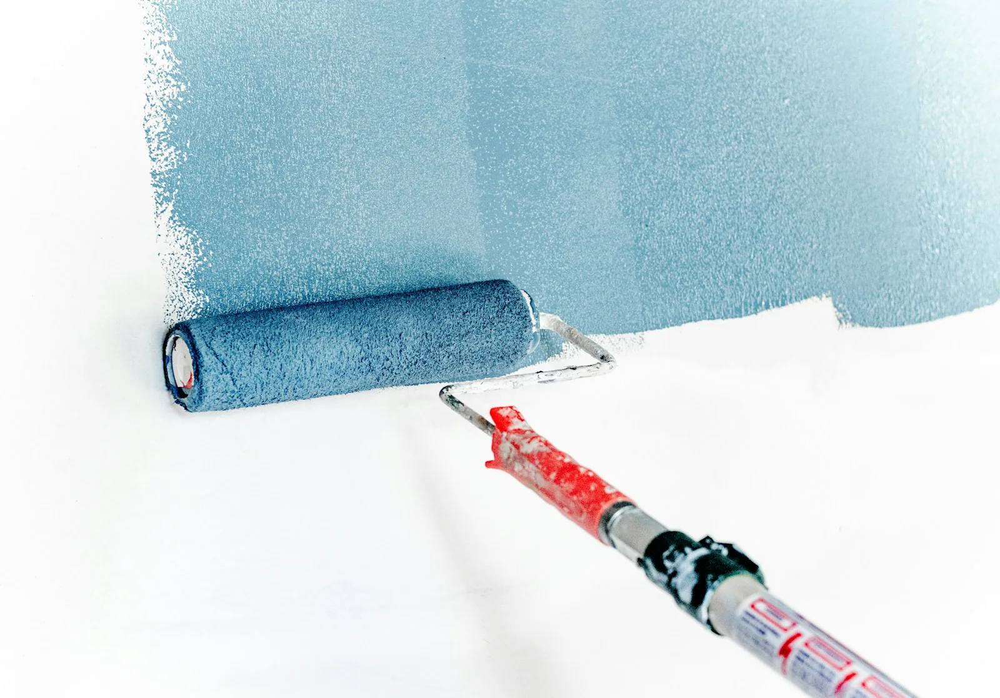
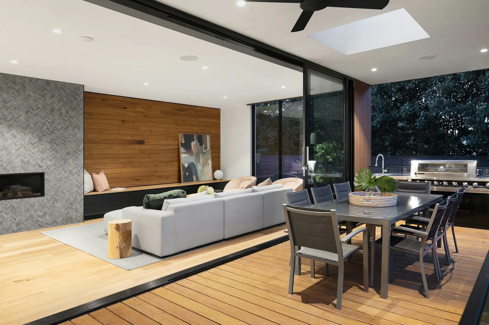
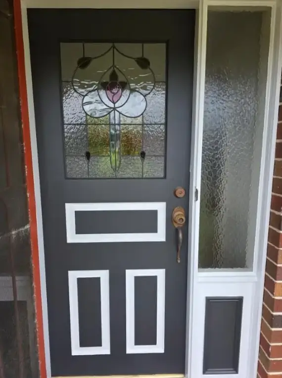
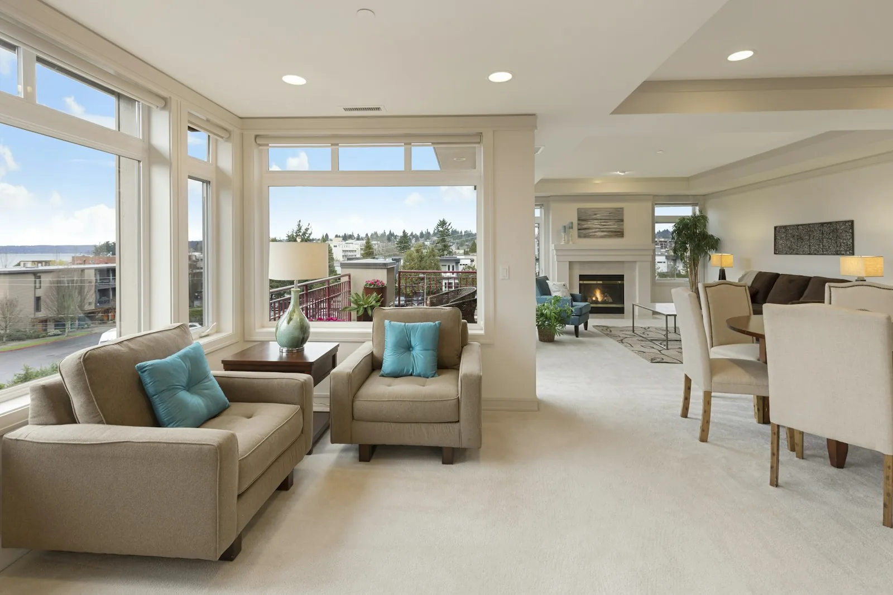
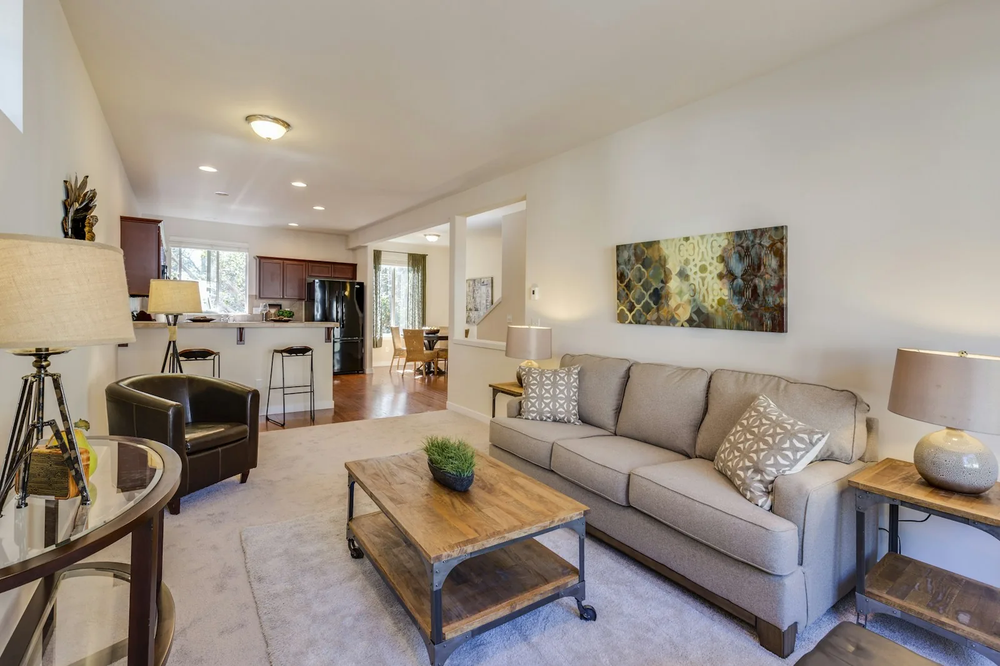

Interior House Painting Services Geelong
See examples of our completed work in our Painting Projects portfolio, or read on for detail on each service below.

Wall Painting
Complete wall painting in Geelong homes — living rooms, bedrooms, hallways and kitchens. Walls are washed, filled and sanded before two full coats of washable low-sheen acrylic go on, with guidance on the right interior wall paint and sheen included so high-traffic walls end up with a finish that wipes clean instead of marking.
Repainting interior walls over dark or dated colours is where preparation pays off — a tinted undercoat and a quality trade acrylic from Dulux, Haymes or Wattyl covers in two coats instead of four, which is the difference between a one-day room and a three-day one.

Ceiling Painting
Ceiling painting for living areas, kitchens and bathrooms — from targeted touch-ups after repairs to complete ceiling repainting in dedicated flat ceiling white. Our ceiling painters treat stains, cracks and mould before painting — not covered over — so the ceiling stays bright instead of the mark bleeding back through.
Ceiling painting Geelong jobs are quoted on height, condition and repairs — water stains need a stain-blocking primer first or they bleed straight through fresh ceiling white, and bathrooms need a mould-resistant formulation rather than standard flat paint.

Door & Trim Painting
Skirting boards, architraves and door frames painted in hard-wearing water-based enamel, plus complete door painting for Geelong homes. Trims are sanded between every coat and finished last — after ceilings and walls — which is how the lines stay crisp and the surface ends up smooth rather than showing brush marks.
Skirting board painting and architrave work is finished in water-based enamel, sanded between every coat — the modern choice that stays white for years instead of yellowing the way old oil-based enamels do.

Feature Walls
Feature wall painting with colour consultation included — deep colours, two-tone walls, accent wall painting and decorative wall painting finishes. Dark colours are primed with a tinted undercoat so they cover in two coats, and we help you pick the right wall, not just the right colour.
Feature wall painting Geelong homes ask for most is the bedhead wall or the living room focal wall — the wall the room naturally faces. Get the placement right and one wall changes the whole room; get it wrong and it reads as an unfinished paint job.

Apartment Painting
Apartment painting across Geelong's units, townhouses and strata buildings. Our apartment painters work compact spaces efficiently with low-odour, low VOC paints, and we handle lift bookings, insurance paperwork and body corporate requirements so the job runs in days, not weeks.
Unit painting is quoted differently to houses — smaller surface areas but stricter logistics, which is why most 1–2 bedroom apartments price as a project ($2,500–$5,500) rather than per room, and why vacant units finish in 1–3 days.

Rental Property Repainting
Fast, affordable interior repainting for landlords and property managers — scoped tight for speed: walls and scuffed trims in the same or similar colour, completed while the property is vacant so the fresh paint is earning rent, not waiting for it.
Rental property painting between tenants is the cheapest time to do it — no furniture to work around, no scheduling with occupants, and a same-colour repaint avoids extra coats entirely. The listing photos are usually the real return on the investment.